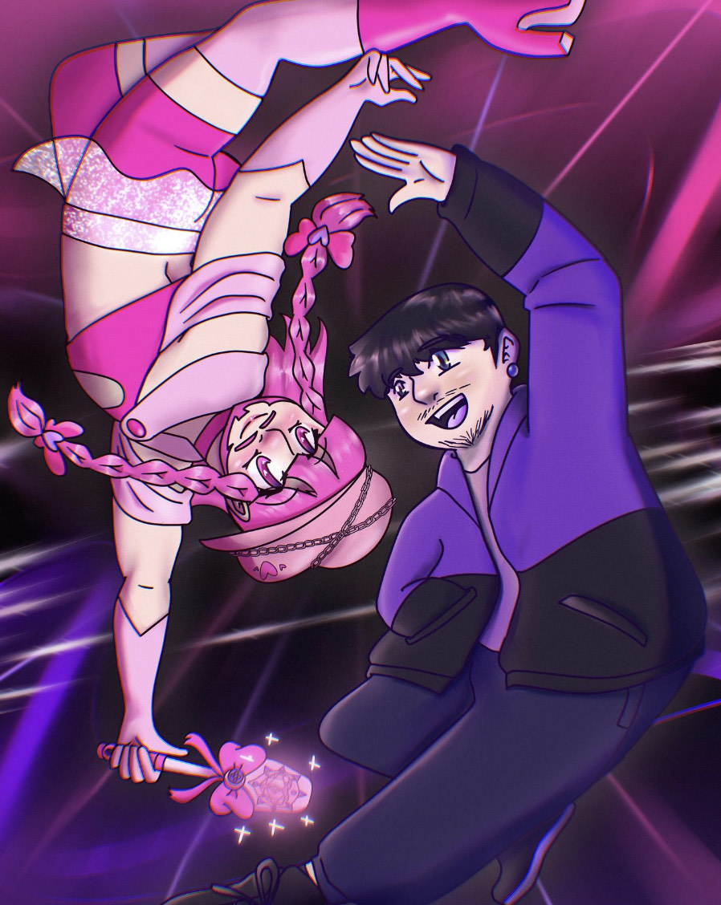

Reveal Yourself, Reflection!
This piece features a self-portrait of me looking at my drag persona, Sailor Claire.
This is intended to be looked at any angle, and plays into the idea of the "reflection world."
Basically, a world that shows us our true reflections. Sailor Claire is basically who my reflection is,
and everyone else has their own reflection that relates to who they truly are on the inside.
What do you think your reflection would look like?